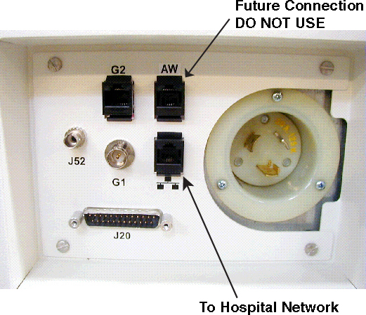
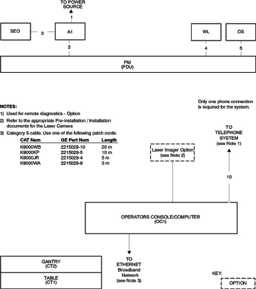
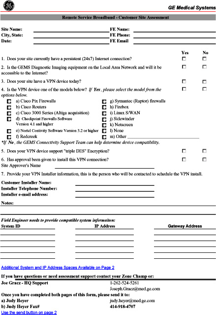
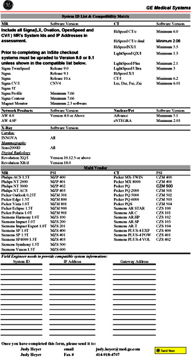

Operating Documentation
Direction 2378260-800, Rev# 10
GOC3 Service Methods (Adv)
Operating Documentation |
Broad-band is considered the standard network connection for LightSpeed 5.X. (A dial-up modem is optional.) Broad-band connections should use one of the following Category 5 patch cables.
| CAT Num | GE Part Num | Length |
| K9000WB | 2215028-10 | 20 m |
| K9000KP | 2215028-5 | 10 m |
| K9000JR | 2215028-4 | 5 m |
| K9000WA | 2215028-9 | 3 m |
The CT system is connected to the network through the Console.
A patch cable (not to exceed 10 feet) should be provided by the customer, and it is used to connect the console to a wall box. (See Notes on Illustration 2.)
Some customer-site units may require cable duct-work or conduit to route connecting network cables to the workstation, camera and console.
The run from the hospital switch to the CT wall outlet must not exceed 290 ft. (88m). Bandwidth performance is degraded when the length reaches 300 ft. (91m) or greater.
| NOTE: | For the optional modem: Two phone lines should be provided by the facility. One line is for use with a modem and must be an analog line. The second line is a voice only line. |
Illustration 1: Console Rear Bulkhead

Illustration 2: LightSpeed System Interconnection Runs

| NOTE: | For a scalable PDF version of the LightSpeed System Interconnection Runs, click on the PDF icon below: |
Media File 1: LightSpeed System Interconnection Runs

The United States network connectivity requirement for this product is broad-band. The US process relies on the Install Specialist to select a Customer Champion and identify an IT contact for the site. Together, those individuals then complete a site assessment to gauge what tasks are needed to fulfill the connection.
Anyone can contact the GE Connectivity team at 800.321.7937, Option #3, with questions.
Provide GEMS Installation Specialist with an accurate site address, telephone number, contact name, and e-mail address for the:
Customer Champion
Co-ordinate VPN activities between Radiology/Cardiology and the Information Technology (IT) departments
Act as a focal point in assuring site broad-band infrastructure meets GEMS requirements for connection as determined by a mutual assessment with the GEMS Connectivity team.
IT Contact
Complete an equipment assessment with GEMS Connectivity team to determine site readiness for broad-band
Work with the Customer Champion to complete any identified infrastructure changes
Provide IP addresses for new CT equipment
Provide a VPN compatible appliance that will support the IPSec tunneling protocol and 3DES data encryption
To utilize an Internet Service Provider that supports static routing
Illustration 3: Customer Site Assessment Form - Pg 1

Illustration 4: Customer Site Assessment Form - Pg 2

| NOTE: | For a scalable PDF version of the Customer Assessment Form, click the PDF icons below: |
Media File 2: Customer Site Assessment Form - Pg 1

Media File 3: Customer Site Assessment Form - Pg 2